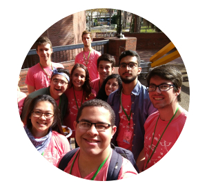
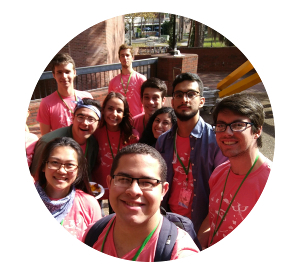
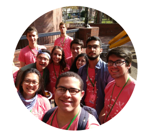

A Little About Myself
Born in
Did I forget to mention that I'm an avid soccer fan?
 

Born in
Did I forget to mention that I'm an avid soccer fan?

"We are not put on this earth for ourselves, but are placed here for each other. If you are there always for others, then in time of need, someone will be there for you."
- Jeff Warner
Organized and coordinated opportunities for UF students to participate in hackathons across the US. Helped establish a hacker culture at UF which supports the university’s computer science and engineering community. Collaborated along with computer science departments and communities at different universities to coordinate travel to and from hackathons. Collaborated along with computer science departments and communities at different universities to coordinate travel to and from hackathons.
Organized social and professional events to connect students to fellow peers, the local community and industry. Coordinated events along with other UF engineering organizations to create opportunities for the campus engineering community to come together.Worked along UF’s computer science department to revise and improve the university’s computer science and engineering curriculum.